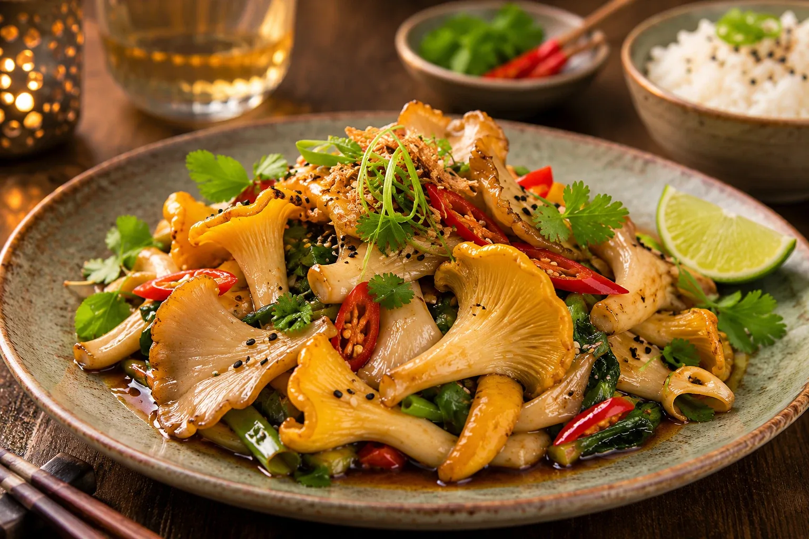
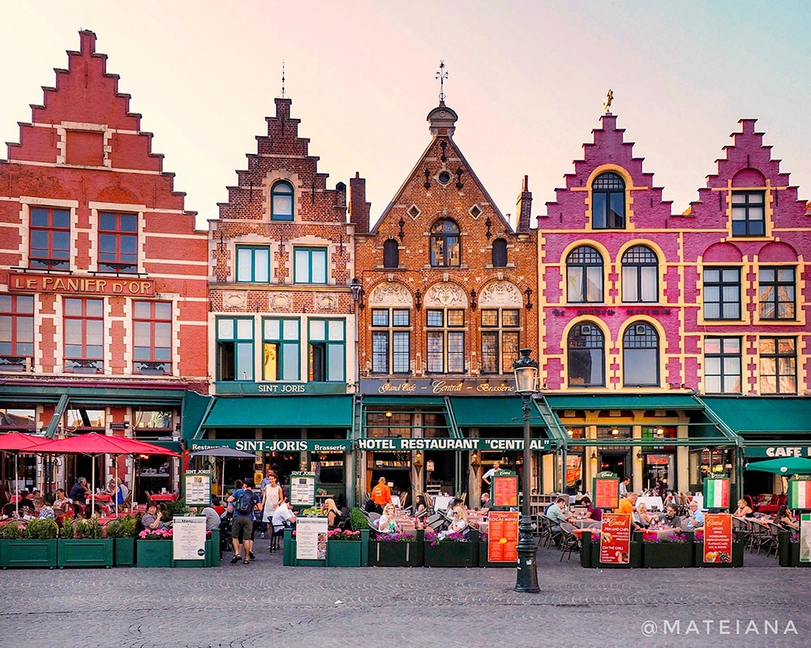
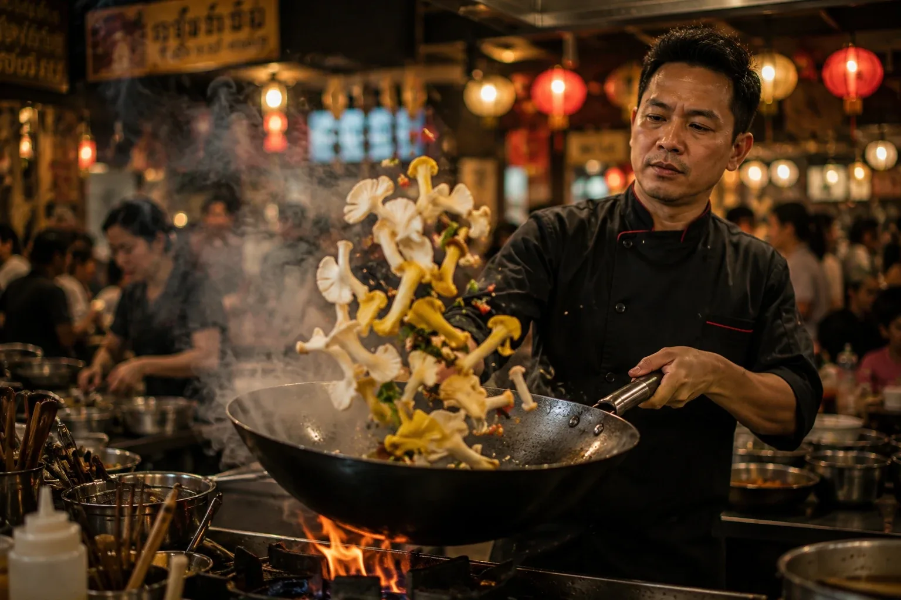
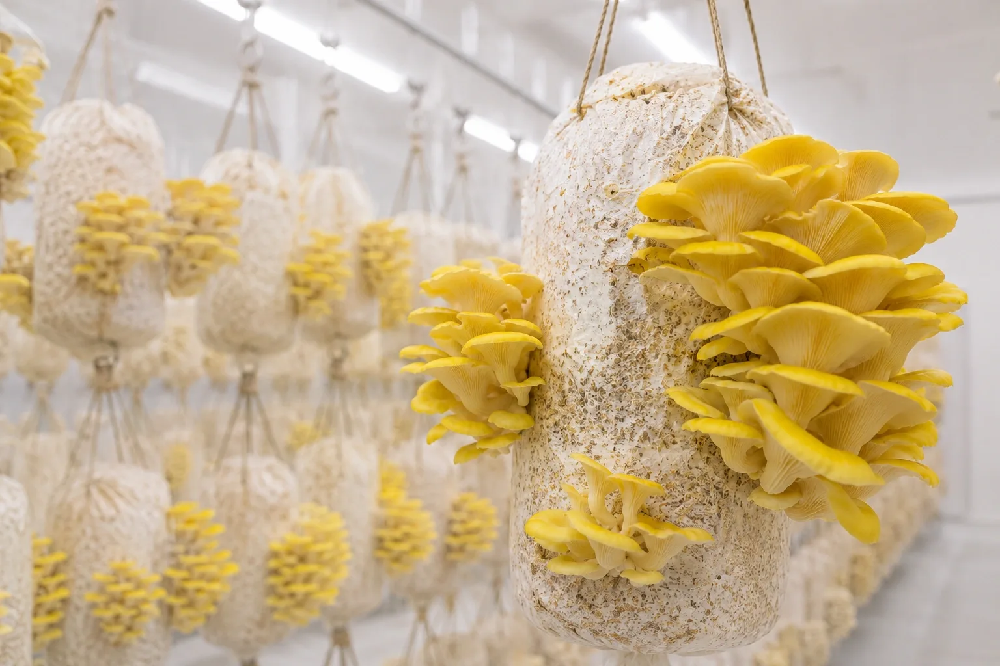
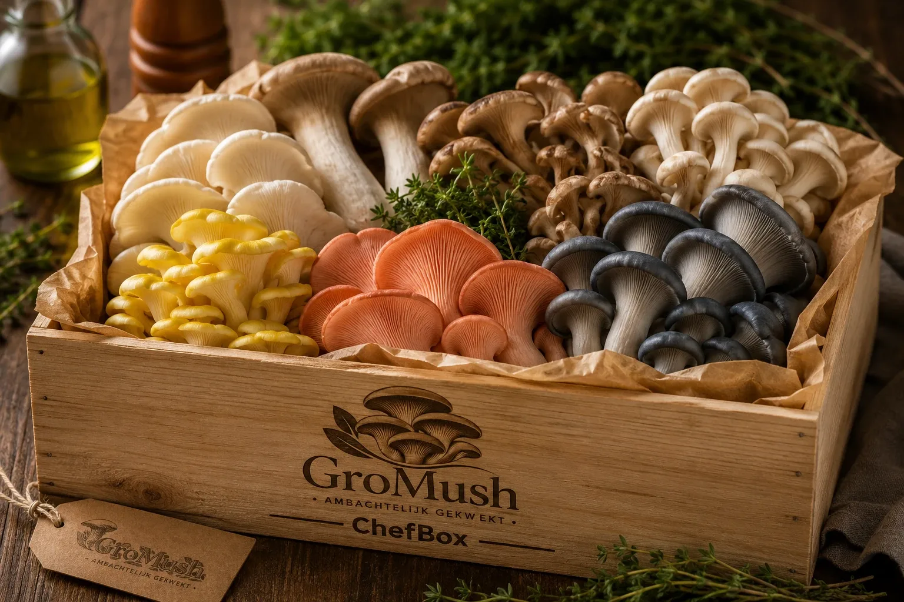
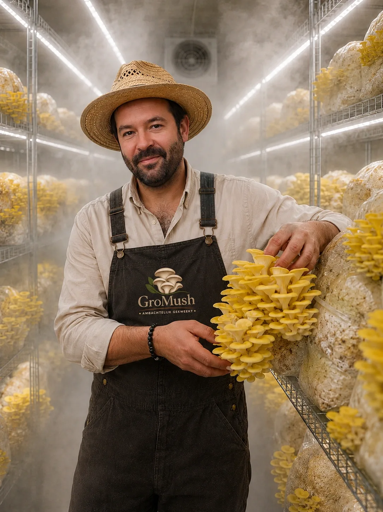

Wij leveren verse oesterzwammen in Brugge.
Van sterrenzaak tot foodbar: de Brugse keuken is veeleisend, en zo horen wij het graag. Onze oesterzwammen worden geoogst op bestelling en staan binnen de 24 uur in uw keuken — week na week, op een vaste ronde.
Bestel Oesterzwammen


Een vaste ronde door de stad
Brugge telt honderden keukens en één constante: er is geen tijd voor leveranciers die niet komen opdagen. Daarom rijden wij wekelijks een vaste ronde door de stad — zelfde dag, zelfde kwaliteit, rechtstreeks van de kwekerij.
- Vaste leverdagen
- Afgesproken volumes
- Persoonlijk contact
- Snelle communicatie

Speciaal voor restaurants
Soorten en volumes afgestemd op uw kaart, in overleg met de kweker.
Gemakkelijk bestellen
Eén WhatsApp-bericht of telefoontje volstaat. Geen portaal, geen gedoe.
Wekelijkse levering aan de deur
De kweker levert zelf, vers geoogst, tot in uw keuken.
Waarom chef-koks in Brugge kiezen voor GroMush
Van klassiek Belgisch tot Aziatische fusion: Brugse kaarten vragen om variatie. Met zes soorten oesterzwammen — van gele tot zalm — geven wij chefs iets om mee te spelen, in een kwaliteit die elke week opnieuw klopt.
Wij leveren aan:
- Restaurants
- Hotels
- Brasserieën
- Foodbars
- Grootkeukens
- Traiteurs
- Cateringbedrijven
-
Binnen de 24u geoogst
Zo ontvangt u oesterzwammen die vaak minder dan 24 uur eerder werden geoogst. Dat proeft u in de stevigheid, de smaak en de houdbaarheid.
-
Rechtstreeks contact met de kweker
Bij iedere bestelling of levering staat u rechtstreeks in contact met kweker Anthony.
-
Levering op maat
Chef-koks moeten kunnen plannen. Daarom werken wij met duidelijke afspraken en leveringen.
Hoeveel couverts gebruikt jouw keuken?

De ChefBox die bij jouw keuken past
Van 5 tot 25 kg per week, wekelijks vers geleverd in Brugge. Twijfelt u nog? Start met een gratis proefbox en proef eerst alle soorten.
Ontdek de formules
Rechtstreeks van de kweker naar jouw bord
GroMush is een ambachtelijke paddenstoelenkwekerij, opgericht door Anthony Watteeuw, met een passie voor duurzame landbouw, pure smaken en lokale voeding. Door uitsluitend op bestelling of in kleine batches te oogsten, garanderen we een uitzonderlijk verse oogst die haar smaak, textuur en voedingswaarde optimaal behoudt.
Geen lange transportketens of massaproductie, maar een eerlijk en ambachtelijk product dat rechtstreeks van de kweker naar jouw keuken gaat.
Ontmoet AnthonyBrugge is het eindpunt van onze ronde
Elke week rijdt ons wagentje van de kwekerij in Knokke-Heist via Damme naar Brugge. Vers geoogst vertrokken, vers geleverd aangekomen.